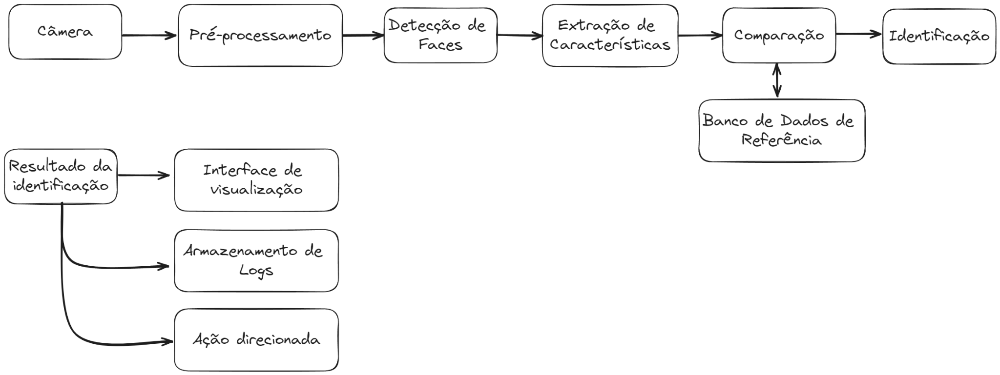

Contexto e Cenário de Aplicação (CA)
A tecnologia de reconhecimento facial tem se tornado uma ferramenta poderosa e versátil em diversas áreas, desde segurança e autenticação até interação homem-máquina. No contexto educacional, o reconhecimento facial apresenta um potencial significativo para aprimorar a eficiência e a precisão do registro de presença em sala de aula, substituindo os métodos tradicionais que são frequentemente suscetíveis a erros e fraudes além de ser um processo moroso, que gasta tempo de aula em um procedimento burocrático.
O registro de presença é uma prática essencial em instituições educacionais, pois garante que os alunos estejam participando ativamente das atividades acadêmicas. Métodos tradicionais, como chamadas manuais ou assinaturas em folhas de presença, podem ser demorados, interrompendo o fluxo da aula e proporcionando oportunidades para marcações fraudulentas. Além disso, esses métodos exigem um esforço administrativo considerável para processar e manter registros. A implementação de um sistema automatizado de reconhecimento facial pode resolver muitos desses problemas. Um sistema desse tipo pode capturar e identificar rostos de forma rápida e precisa, registrando a presença dos alunos automaticamente. Isso não só economiza tempo, mas também melhora a precisão dos registros e reduz a possibilidade de fraude.
Premissas do Projeto
- Capturar imagens dos alunos em tempo real utilizando câmeras instaladas na sala de aula.
- Processar e identificar os rostos dos alunos com alta precisão.
- Registrar automaticamente a presença dos alunos identificados em um banco de dados.
Restrições do Projeto
- Aluno deve fornecer autorização para utilização de sua imagem.
- O processo deve ignorar alunos não cadastrados no banco.
- Utilização de câmeras de boa qualidade que consiga capturar imagens faciais com precisão.
- Disponibilidade de computadores com capacidade suficiente para rodar os códigos e algoritmos de reconhecimento facial.
- Tempo de dedicação considerado no TPI da disciplina.
Modelagem Funcional do Sistema (MF)
O sistema será composto por módulos que capturam imagens faciais, processam e validam a identidade do aluno, caso esse esteja cadastrado, e então é realizada a marcação da presença no banco de dados. O fluxo geral do sistema envolve a captura da imagem, processamento, reconhecimento facial, verificação da identidade e marcação no banco de dados.

diagrama funcional
Captura de Imagem
- Entrada: Captura contínua de imagens dos alunos que entram na sala de aula utilizando uma câmera instalada.
- Saída: Quadros de imagens contendo rostos dos alunos.
- Processamento: A câmera captura a imagem facial dos alunos e então envia a imagem para o módulo de processamento.
Detecção de Rostos
- Entrada: Imagens capturadas.
- Saída: Coordenadas das regiões das imagens que contêm rostos.
- Processamento: Detecção dos rostos presentes nas imagens capturadas.
Pré-processamento de Imagens
- Entrada: Imagens contendo rostos.
- Saída: Imagens de rostos pré-processadas.
- Processamento: Aplicação de técnicas de pré-processamento nas regiões das imagens que contêm rostos para melhorar a precisão do reconhecimento.
Reconhecimento Facial
- Entrada: Imagens de rostos pré-processadas.
- Saída: Identidades dos alunos reconhecidos.
- Processamento: Identificação dos rostos detectados comparando-os com um banco de dados de rostos conhecidos (alunos cadastrados).
Registro de Presença
- Entrada: Identidades dos alunos reconhecidos.
- Saída: Atualização do banco de dados de presença.
- Processamento: Registro automático da presença dos alunos identificados no sistema.
Processos Auxiliares
- Antes da implementação, o sistema deve ser treinado com um conjunto de dados de imagens faciais dos alunos cadastrados. Este processo envolve o ajuste dos algoritmos de reconhecimento facial para garantir alta precisão.

diagrama funcional
Laboratorio Experimental do SPV (Lex)
O presente laboratório experimental tem como objetivo realizar a implementação prática de um sistema de reconhecimento facial para a marcação de presença dos alunos em sala de aula. Para alcançar este objetivo, serão seguidos os passos descritos a seguir:
- Configuração do Ambiente Virtual: Preparação do ambiente de desenvolvimento utilizando o sistema operacional Linux Ubuntu.
- Cadastro dos Estudantes: Inserção dos dados e imagens dos alunos no sistema de reconhecimento facial.
- Execução do Sistema: Teste do sistema para reconhecimento dos alunos durante a aula.
- Finalização e Verificação: Avaliação do sistema e validação do arquivo de presença gerado.
Parte 1 - Configuração do Ambiente Virtual
-
Obtenção dos Arquivos
Baixe a pasta visao_computacional do repositório GitHub CV-2024-2Q/Projeto.
-
Instalação do Virtualenv
Dentro da pasta visao_computacional, abra um terminal e execute o seguinte comando para instalar o aplicativo que cria ambientes virtuais no Python em Linux Ubuntu:
sudo apt install python3-virtualenv -
Criação do Ambiente Virtual
Em seguida, crie o ambiente virtual com o comando:
virtualenv venv -
Navegação para o Diretório do Ambiente Virtual
Acesse o diretório do ambiente virtual com o comando:
cd venv -
Ativação do Ambiente Virtual
Por fim, ative o ambiente virtual executando o comando:
source bin/activate -
Instalação de Bibliotecas
Com o ambiente virtual configurado, execute o comando abaixo para instalar as dependências necessárias para executar o projeto:
pip install -r requirements.txt
Parte 2 - Cadastro dos Estudantes
Com o ambiente virtual configurado e as dependências instaladas, execute o programa cadastro.py. Este programa é responsável pelo cadastro das imagens dos estudantes.
Durante a execução do programa:
- Para capturar e gravar uma imagem, pressione a tecla "x".
- É necessário fornecer um nome de arquivo no terminal para salvar a imagem.
- Para encerrar a execução do programa, pressione a tecla "q".
As imagens capturadas serão armazenadas na pasta faces, localizada no mesmo repositório do projeto.
Parte 3 - Execução do Sistema
Execute o programa processamento.py. Este programa é responsável por identificar os alunos cadastrados e registrar as ocorrências em um arquivo CSV, incluindo o nome e o horário do reconhecimento. Alunos que não estiverem cadastrados devem ser ignorados pelo sistema.
- Para encerrar a execução do programa, pressione a tecla "q".
Parte 4 - Finalização e Verificação
Após a conclusão da execução do programa de processamento, será gerado um arquivo CSV na pasta lista_presenca, com o nome aula_dd-mm-aaaa. Este arquivo contém o nome e o horário de reconhecimento de cada aluno que foi identificado pelo sistema.